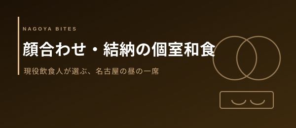

Feature — シーン別特集
名古屋 顔合わせ・結納
個室 和食ランチ おすすめ8選【2026年版・現役飲食人が厳選】
両家の顔合わせや結納の昼食会は、料理の良し悪し以上に「個室の静けさ」と「進行への配慮」で印象が決まります。名古屋で顔合わせ・結納に使える個室和食を、店側の事情を知る現役飲食人の目線で厳選した8軒です。
Editor's Note — この特集の選定基準
- Google評価 4.0以上（2026年6月時点・全店が掲載DBで実在を確認）
- 顔合わせ・結納にふさわしい和食（懐石・会席・割烹・うなぎ・個室和食）
- 個室または落ち着いた席で、家族同士が向き合える空間があること
- 「飲食業界の人間が、自分の親と相手の親を通したいか」を基準に選定
顔合わせの食事会で大切なのは、奇をてらった料理ではなく「両家が落ち着いて話せる時間」です。名古屋は伏見〜栄に懐石・割烹の名店が集まり、名駅・金山には遠方の親御さんが集まりやすい個室和食があります。価格帯も雰囲気も異なりますが、どの店も「個室で、和食で、昼から品よく」というこのシーンの条件を満たす実在店だけを選びました。各店とも顔合わせでの利用は事前予約と「顔合わせで使う」旨の伝達を推奨します。
01 — 厳選8軒
この特集の本命。店側が「顔合わせ・結納などの大切な食事に最適」と明言する、数少ない正統派懐石だ。器までこだわった四季の懐石を完全個室で味わえ、落ち着いた空気が両家の初対面の緊張を自然にほどく。伏見駅から徒歩5分とアクセスも良く、昼の略式結納にも向く。顔合わせで一軒だけ挙げるなら、まずここに相談したい。
食べログで詳細・予約を確認ミシュランガイドにも掲載される実力派の日本料理店。四季の旬を惜しみなく使った繊細な懐石と、落ち着いた和の空間が、格式を求める顔合わせ・結納に応える。「親御さんに名古屋の本物の和食を」という場面で間違いのない一軒。人気店ゆえ昼のコース・個室は早めの予約が確実だ。
食べログで詳細・予約を確認季節感あふれる八寸と、丁寧にひいた出汁が光る隠れ家的な日本料理店。カウンター中心の構成のため、両家4〜6名程度の少人数顔合わせや、結婚の挨拶を兼ねた特別な会食に向く。大将との会話も場を和ませる。大人数や床の間付き個室を要する正式な結納には、席の形を事前に必ず確認したい。予約困難店のため日程は余裕をもって。
食べログで詳細・予約を確認ひつまぶし発祥の地らしく、活きの良い鰻を職人が丁寧に焼き上げる一軒。店側も「国内外のゲストを招く際にも喜ばれる」と語る通り、遠方から来る親御さんに名古屋名物でもてなしたい顔合わせに好適だ。鰻は縁起物として祝いの席にも収まりがよい。久屋大通駅から徒歩5分。ランチが人気のため、顔合わせの席数と個室・座敷の可否は予約時に確認を。
食べログで詳細・予約を確認栄駅徒歩4分・伏見駅徒歩5分の二線使いで、両家どちらの最寄りからもアクセスしやすい個室和食。8,000円台のコース帯で、落ち着いた個室仕様が会食・顔合わせに収まる。常連がつきやすい安定した料理で、「肩肘張りすぎず、しかし品よく」という顔合わせの塩梅に合う。アクセスの良さは遠方ゲストにも親切だ。
食べログで詳細・予約を確認名古屋駅から徒歩5分、国際センター駅からは徒歩3分という集合しやすい立地の鮨店。赤酢のシャリで握る一万円台の和食コースで、個室対応のため接待でも顔合わせでも常連客がつく。寿司を主役にした顔合わせは華やかで、遠方の親御さんを名駅で迎えてそのまま個室へ、という動線が組みやすい。にぎりの提供形式・個室確約は予約時に相談を。
食べログで詳細・予約を確認金山駅北口から徒歩1分、乗り換えの要衝で両家が集まりやすい個室和食。厳選した和の食材を個室席で楽しめ、3,000〜5,000円台のコースから組めるため、肩の力を抜いた「食事会スタイル」の顔合わせに向く。format張った正式な結納より、まずは両家で打ち解けたいカジュアルな顔合わせに使いやすい一軒。アクセス最優先の家族会食にも。
食べログで詳細・予約を確認名駅徒歩5分、全室個室が売りの和食店。しゃぶしゃぶを個室で囲めるため、両家の人数が読みにくいときや、年配の親御さんが多い席でも周囲を気にせず過ごせる。鍋を一緒につつく時間は自然と会話を生み、初対面の硬さをほどく効果がある。名駅集合でアクセスを最優先したい顔合わせ・食事会の現実解。コース内容と個室サイズは予約時に確認を。
食べログで詳細・予約を確認飲食人からの一言 — 顔合わせを成功させる予約のコツ
- 予約時に必ず「両家の顔合わせ／結納で使う」と伝える。席の配置・進行・お祝い膳の相談に乗ってもらえる。
- 個室は「確約」かを確認。「個室希望」と「個室確約」は別物で、当日に半個室へ変わることがある。
- 下座・上座の席次は店に相談すると配慮してもらえる。出入口から遠い側が上座が基本。
- 結納品・記念品の受け渡しや撮影の可否、花の持ち込みは事前に伝えておくと当日が滑らかになる。